Proprietary to General Electric
Direction 5114043-800, Rev# 9
LightSpeed 3.X Service Methods (Advanced)
Proprietary to General Electric |
| Last Revised: | November 2004 |
| Gantry balance must be checked for any components replaced on or removed from the rotating assembly. | |
Gantry balance can be checked without removing covers. Gantry balance adjustments require front and possibly rear gantry cover removal.
| PROJECTILE HAZARD | |
| FAILURE TO TORQUE TRIM WEIGHT FASTENING HARDWARE WILL RESULT IN DAMAGING PROJECTILE EVENTS. THIS WILL RESULT IN SEVERE EQUIPMENT DAMAGE AND POSSIBLE PERSONAL INJURY. | |
| Torque trim weight fastening hardware per specifications. |
The trim weight kit contains a 3/4 inch (19 mm) crowfoot for 3/8 inch socket drive. You cannot set your torque wrench directly. You must calculate the offset created by the extension to properly set the torque wrench dial. Failure to do this will result in excessive torque being applied to the threaded rods. Remember, torque is always measured at 90° angles. Deviation from this angle will reduce the applied torque regardless of the tool setting.
For the torque wrench specified in kit 46-268445G1, the Sturtevant Richmont model 3SDR-1200I, 200 - 1200 in-lb, GE part number 46-315668P2, the correct setting is:
62 N-m (45.7 ft-lb).
Since there are several versions of torque wrenches available, the following formula has been provided. This formula works for all “Click Type” or “Dial” Torque Wrenches. Refer to Illustration 1.
Illustration 1: Torque Wrench Dial Setting Conversion Formula
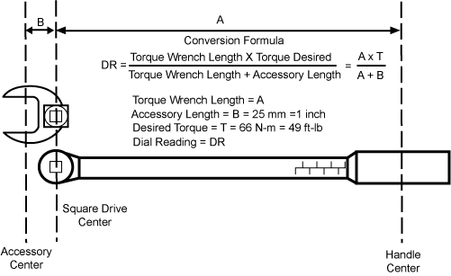
| PROJECTILE HAZARD | |
| STRESS ON BALANCE WEIGHT RODS CAN LEAD TO FAILURE OF THE RODS DURING GANTRY ROTATION. | |
| Do not use threaded rods to rotate gantry. Threaded rods may bend causing stress to the rods which may lead to future failure of the rods to hold the balance weights during rotation. |
Illustration 2: Advanced Access
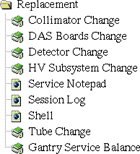
Other proprietary access points are as follow:
Replacement Procedures
Collimator Change
DAS Boards Change
Detector Change
HV Subsystem Change
Tube Change
Diagnostics
ImageChain
System Monitoring
Axial Control
Illustration 3: Gantry Balance Tool Opening Screen
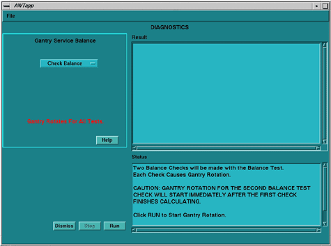
Illustration 4: Gantry Balance Help Screen
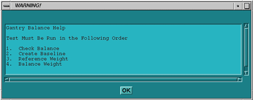
Illustration 5: Check Balance Results
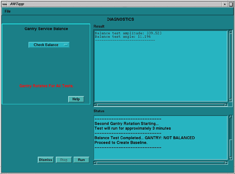
Illustration 6: Create Baseline Instructions
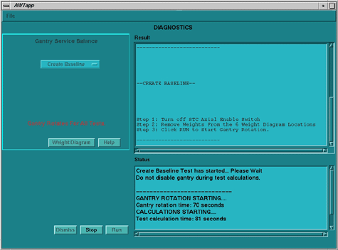
Illustration 7: Weight Diagram
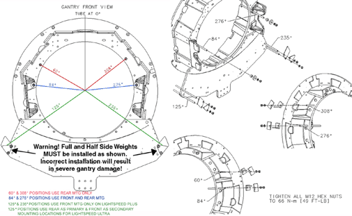
| NOTE: | Select the following PDF icon, to view a larger version of the
Weight Diagram shown above. |
Illustration 8: Create Baseline Results
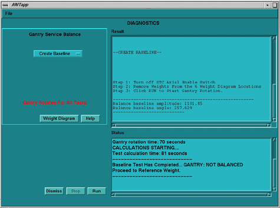
Illustration 9: Reference Weight Instructions
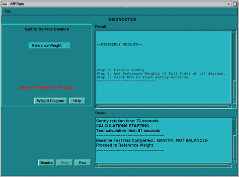
Illustration 10: Calculated trim weight values and locations
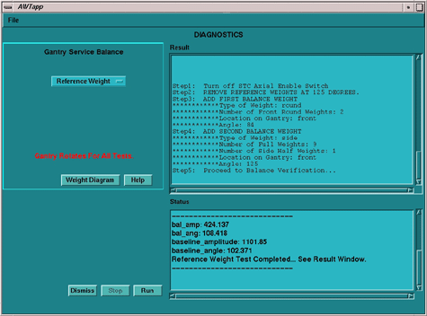
Illustration 11: Balance Verification Successful Screen
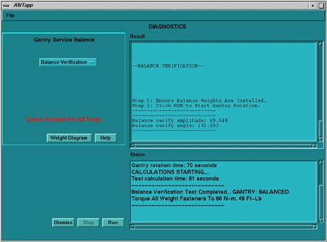
Illustration 12: Balance Verification Failure Screen
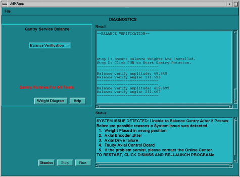
GENERAL COMMENTS
This program is written to follow a specific path without deviation. Various generic error screens are presented to assist you to identify common mistakes, such as “Failure to energize axial enable switch between steps”. In the event of a System Issue Detected failure, the program directs you to investigate most likely items of failure. Those items must be repaired before the program can be successfully completed.